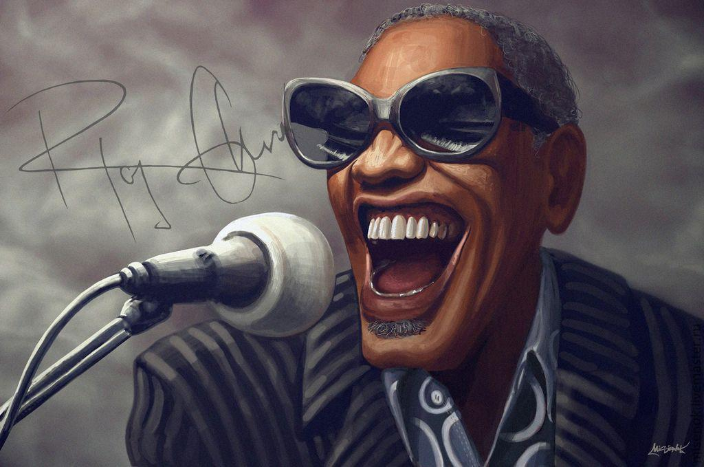

Raymond Charles Robinson
Singer

(September 23, 1930 - June 10, 2004) was an American singer, songwriter, pianist, and composer
A brief history about Ray Charles:
- In 1979, Charles was one of the first musicians born in the state to be inducted into the Georgia Music Hall of Fame. His version of "Georgia on My Mind" was also made the official state song of Georgia.
- In 1981 he was given a star on the Hollywood Walk of Fame and was one of the first inductees to the Rock & Roll Hall of Fame at its inaugural ceremony, in 1986. He also received the Kennedy Center Honors in 1986.
- In 1991, he was inducted to the Rhythm & Blues Foundation and was presented with the George and Ira Gershwin Award for Lifetime Musical Achievement during the 1991 UCLA Spring Sing.
- In 1990, he was given an honorable doctorate degree in fine arts by the University of South Florida.
- In 1993, he was awarded the National Medal of Arts. In 1998 he was awarded the Polar Music Prize, together with Ravi Shankar, in Stockholm, Sweden. In 2004 he was inducted to the National Black Sports & Entertainment Hall of Fame. The Grammy Awards of 2005 were dedicated to Charles.
- In 2001, Morehouse College honored Charles with the Candle Award for Lifetime Achievement in Arts and Entertainment, and later that same year granted him an honorary doctor of humane letters. Charles donated $2 million to Morehouse "to fund, educate and inspire the next generation of musical pioneers."
- In 2003, Charles was awarded an honorary degree by Dillard University, and upon his death he endowed a professorship of African-American culinary history at the school, the first such chair in the nation.
- In 2010, a $20 million, 76,000 sq ft (7,100 m2) facility named the Ray Charles Performing Arts Center and Music Academic Building, opened at Morehouse.
- In 2015, Charles was inducted into the Rhythm and Blues Music Hall of Fame.
- In 2016, U.S. President Barack Obama said, "Ray Charles's version of "America the Beautiful" will always be in my view the most patriotic piece of music ever performed"